Tryndamere
Tryndamere
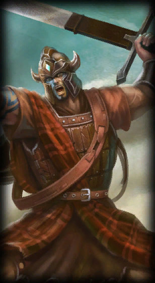
Highland Tryndamere
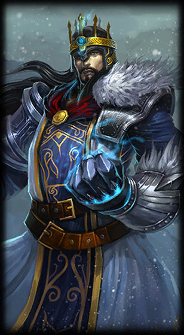
King Tryndamere
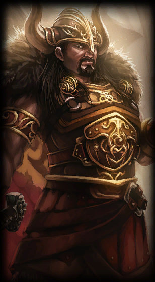
Viking Tryndamere
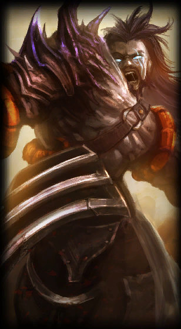
Demonblade Tryndamere
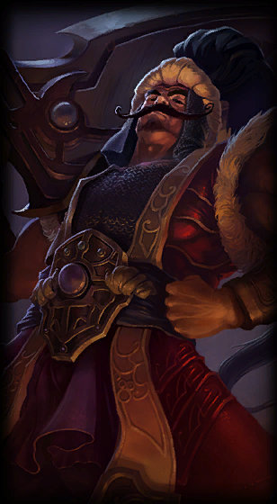
Sultan Tryndamere
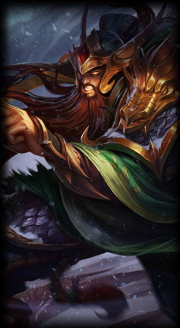
Warring Kingdoms Tryndamere
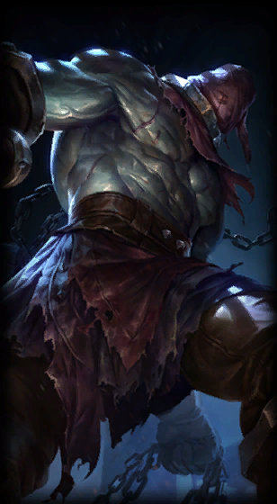
Nightmare Tryndamere
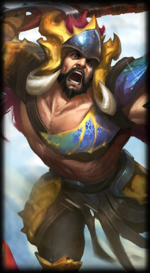
Beast Hunter Tryndamere
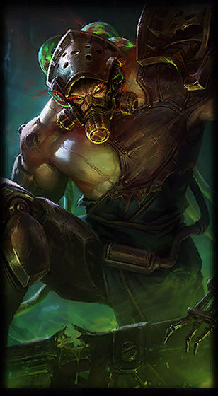
Chemtech Tryndamere
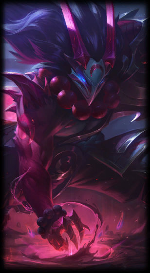
Blood Moon Tryndamere
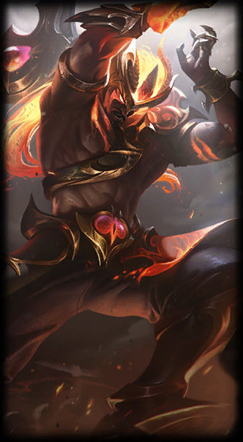
Nightbringer Tryndamere
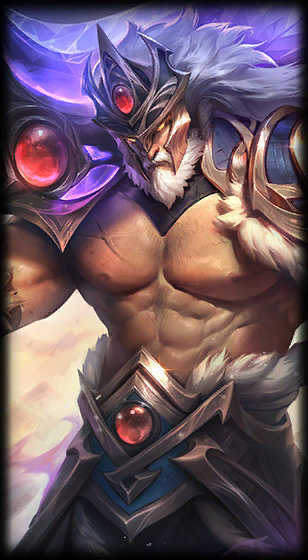
Victorious Tryndamere
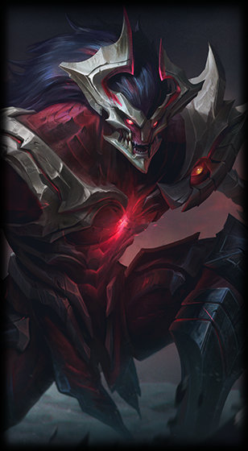
Visions of the Fallen Tryndamere
Fueled by unbridled fury and rage, Tryndamere once carved his way through the Freljord, openly challenging the greatest warriors of the north to prepare himself for even darker days ahead. The wrathful barbarian has long sought revenge for the...